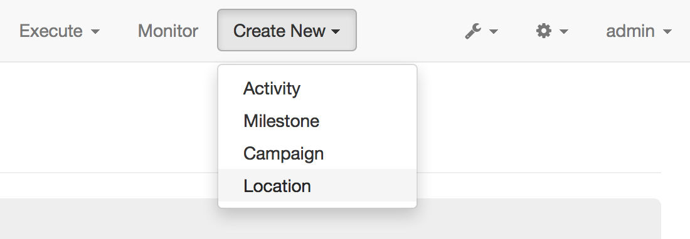

To enable CTA tracking for a Channel, follow these steps:
In the CampaignChain header menu, click the Create New button and select Location.
Then, choose the appropriate Location from the drop-down list, e.g. Website to include a Website into CTA tracking.
Fill in the required data to connect the Channel. For example, provide the base URL of a Website (you can omit adding pages of the Website).
Once you’re done, CampaignChain will display a list of connected Channels to you. This list will include the unique Channel Tracking ID that has been assigned by CampaignChain to your new Channel. You will need this ID in the next step.
First, include a JavaScript file provided by CampaignChain in the HTML of the online channel you plan to include.
The file is named campaignchain_tracking.js and once you have it included, it will take care of sending all the information for tracking CTAs to your CampaignChain instance.
Include the file by adding the code below to your channel, ideally right before the closing body element (i.e. </body> element) and make sure that it appears on all pages of the Channel.
<script type="text/javascript" src="[CAMPAIGNCHAIN INSTALLATION]/bundles/campaignchaincore/js/campaignchain/campaignchain_tracking.js"></script>
<script type="text/javascript">
var campaignchainChannel = '[CAMPAIGNCHAIN CHANNEL TRACKING ID]';
</script>
Replace [CAMPAIGNCHAIN INSTALLATION] with the URL of the root of your CampaignChain installation, e.g. http://www.example.com/bundles/campaignchaincore/js/campaignchain/campaignchain_tracking.js.
Next, replace [CAMPAIGNCHAIN CHANNEL TRACKING ID] with the ID generated by CampaignChain for your channel.
{kind=link}
{kind=link}
{kind=link}
{kind=link}